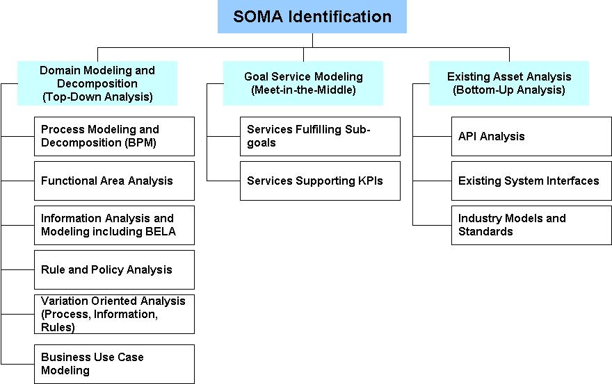

SOMA incorporates best practices and principles from Service-Oriented Architecture (SOA) into today's
software development lifecycle and adds to the best practices from component based development, object
oriented analysis and design and so forth from the past. One of the guiding principles in Service Orientation (SO)
is business to IT alignment. And business to IT alignment requires business design prior to solution definition
and subsequently making sure that IT solutions can be traced back to the business
design. Essentially, as part of building solution using service oriented paradigm, we attempt to identify
five fundamental constructs, namely, services, components, business processes or flows, information, and
rules & policies. In SOMA, we have complementary ways, namely, top down, bottom up, and meet in the
middle to identify these five fundamental constructs.

We typically assess the client’s pain points and identify entry points to identify the primary SOMA practices and
capability patterns that will be used for the engagement. In other words, sometimes, we will embark from an information
perspective, other times from a process perspective, and other times from a rules perspective, and other times from an
existing asset perspective. Note that SOMA Identification requires a combination of techniques to cast a wide net and
uncover and include business and IT capabilities within the service portfolio that span a wide variety of sources.
Depending on the entry point, there will be one or two primary techniques. However, it is recommended to employ a
combination of identification techniques to achieve maximum benefit.
|